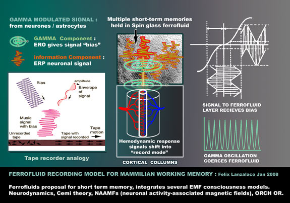
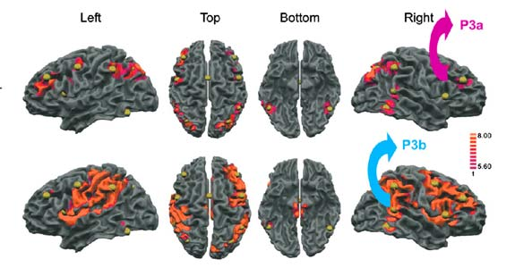
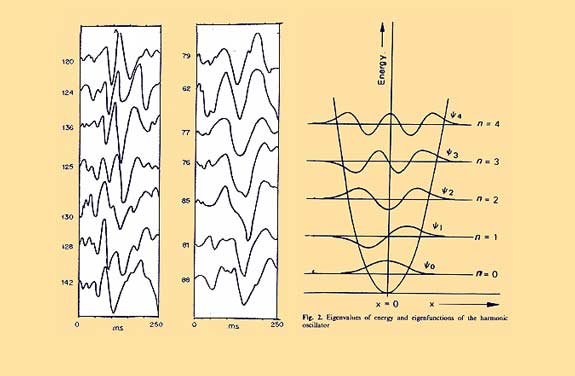
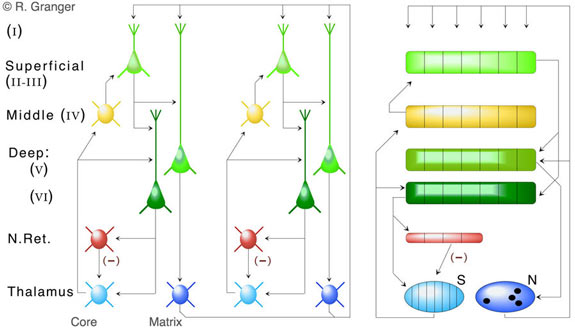
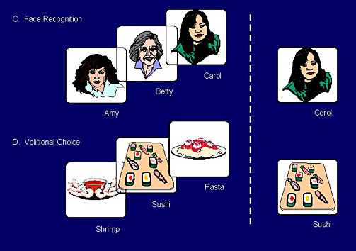
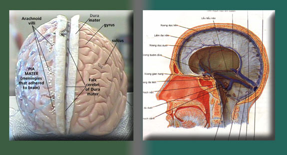

SECTION 5.
DOES DIPOLE SOLVE BINDING COMPUTATION PROBLEM ?
The Ferrofluid outlined in section 4 is ideal for short term quantum "style" superposition processing at body temperatures. I investigate neurophysiology of EEG, P300 and the computations of the thalamocortical system in order to understand if corticolimbic brain processes occur in cycles of cortical superposition and thalamic spectral decomposition.
FERROFLUIDS SOLUTION TO CONSCIOUS BINDING AND SHORT TERM MEMORY
One of the biggest problems for neuroscience is that neuron assemblies do not explain how new sensory stimuli entering the brain, can be held together in mind and decided upon and decisions made as to which area of the neural assembly to hold them.
“Imagine a group of neurons, a neural assembly or ensemble, to represent a feature. Suppose we have 4 of such, denoted as A, B, C, and D. Now you are in a situation where the representation of a complicated situation where all 4 of them needs to be activated, such as recognition of a blue (represented by A) monster (B), and a red (C) lobster (D). If each feature is represented by merely activating the corresponding ensemble, it would not be able to distinguish the situation against "red monster and blue lobster". This is the so called superposition catastrophe and is a big part of the binding problem. (Malsburg) (428)
Then another problem is where this information is hold for longer than the period of initial perception.
“As soon as local fields are generated, the brain uses another mechanism to integrate local patterns into a global pattern of activity.. During this period of sustained activity they possibly interact with other local fields, spatially distributed in the brain, to generate the content of a conscious perceptual episode….. This result is consistent with the role of gamma synchronous oscillations in conscious perception … conscious episodes composing the “conscious present” can be extended to periods of 2 or 3 seconds (Pöppel,1994)…..the minimum latency time for conscious processing would be around 200 ms. Therefore, the sustaining of neuronal activity necessary to support conscious processing would range from 200 ms to 2/3 seconds. How does the brain achieve this result? (296)
Cortical Ferrofluids are capable of answering the binding problem of superposition and the missing parts in understanding short term memory. Ferrofluids have the property of being able to sustain wave superposition (420) while the spin glass frustration has the structure to hold multiple layers of memory at once over a longer period of time.
SUPERPOSITION PRINCIPLE : When two or more wave moving through the same region of space, waves will superimpose and produce a well defined combined effect. Wave maintain their integrity upon overlapping (without themselves being permanently changed).
Nunez a respected neuroscientist in eeg has proposed that the cortex can best be understood in terms of wave like activity at the brain surface, inducing standing waves, which will propogate across the surface (330)
"The eigenfunctions for waves on the surface of a sphere are also of interest in the application of wavelike ideas to EEG. Of course the "hemispheres" of the brain are not spheres. Each hemisphere can perhaps be pictures as a bumpy football with a hole in the bottom for a brainstem. ...We consider waves travelling through the cortex(including the association fibres) with possible relay through the thalamus. Since the cortex is closed upon itself the analogy to spherical geometry will be quite usefull at least in a qualitative sense...The eigeinfunctions for waves (nondispersive and undamped) are given by functions called the "spherical harmonics"These eigenfunctions..are the spatial shapes of the normal modes for the waves on the surface of a sphere. Waves on the sphere do not reflect off boundaries..Here waves travelling in one direction will go round the sphere and coalesce with other waves. (700 p 330)
REINTERPRATING EEG
The GAMMA oscillations, (which are unique to the cortex) involved in activating the binding of perceived sensory input to short term memory would provide an AC signal to write ferrofluid signal. The idea of carrier signals in neurology is prevailent with several different versions existing. (426a, 566, 426) While slower waves delta to alpha would probably be carriers for limbic / cortical interactions, requring multiplexing of information, Where as Beta is marked out as an ideal long distance cortico/cortical carrier (424v3).
“Recordings of EEG activity in animals and humans demonstrate the spatial coherence of oscillations carrying spatiotemporal patterns, as described by Freeman in Chapter 2. The recordings reveal a shared oscillation in cortical potential over extended cortical areas within the beta band (12 Hz to 30 Hz) and gamma band (30 Hz to 80 Hz). These fluctuations serve as a carrier wave for perception information by means of spatial patterns with amplitude modulation (AM)” (566)

Whatever the carrier signal is the diagram above summarizes the theory. The analogy is much like a tape loop recorder, except the flow of blood moves the ferrofluid layer. Those signals which garner the requirements to register as short term memory by being gamma associated neural activity, get written to the ferrofluid layer, as ferroelectric fluids respond to AC phase. Singal amplification is increased by the hemodynamic response and supported by ab eletromagnetic carrier proved by (depending on cortical areas involved)
alpha/theta/beta synchrony. BOLD fMRI correlates both ERP (411) and Event oscillation (409) T
As well as providing, large area superpositional binding, The role of the ferromagnetic material in consciousness is being proposed as a buffer or cache between short term processing and medium to long term memory processes. While neurons are firing, creating ionic changes in the extracellular fluid. This buffer grabs and holds Modulated Evoked signals associated with short term memory. These would be split into two types event related potentials ERP (405) which will be explained more fully, and Event related oscillation ERO signals such as delta to gamma (407). The ERO signals in the various combinations outlined, would be equivalent to bias and carrier signal applied to a recording tape. No data could be found that ferroelectric fluids at physiological tempratures can do more than record information one way, so the fluid layer may just be for sustaining superpositioned information in a fast acting short term binding layer.
FEASIBILITY OF MACROSCOPIC QUANTUM "STYLE" COMPUTATION WITHIN THE FERROFLUID
This writing of perceived information by gamma oscillations to conscious perception is followed by a unique signal called P300, called so because it occurs about 300 milliseconds after conscious perception. (408a) The P300 generation is entirely cortical, covering much of it’s area (402,403) and involved in a wide range of perceptual selection processes such as object recognition. (408a2)
Stimulus encoding that promotes successful memory storage to facilitate retrieval and recognition produces increased P300-like amplitude (402) It’s intrinsic functionality in dealing with many probable outcomes ,marks it out as a signal which could be involved in superposition calculation.
“the P300 is not distinct from, but neither entirely explained by, the background dynamics of neural activity. It is not singularly caused by the resetting of pre-existing oscillatory activity, but rather it is affected by and affects such activity. Both explanations fit with the leading explanation for gross P300 behavior, the context updating hypothesis. The P300 is thought in this model to represent the physical change undergone when probabilities tied to certain outcomes are refreshed in light of the subject’s most recent contextual information”(403)

Images of P300 activation during perceptul processing. P300 consists of two signals, P3a/P3b with P3a being more anterior.
P300 and similar signals are entirely cortical even through they consist of phase locking theta / delta oscillations originating from the limbic system. (402, 576, 576a, b). I am going to suggest that the P300 signal represents the calculation of a superposition process, firstly because it appears to mark the processing of cortical superpositions. Evoked signals from sensory input propagate throughout the cortex and add up in a superposition of gamma activity (411c)
Because the P300 is a synchronized composite signal, other researchers (weiss below) have correlated the P300 spectra and individuals memory span number with the number of layers in a quantum spectra. (426) A quantum spectra is a superposition of waveforms, which could equivocate well, to a proposed function of the P300, to collapse cortical wave superposition.
“The number of EEG harmonics (n = 1, 2, ... , 9) is identical with memory span, and the eigenvalues of the EEG impulse response are represented by the zero-crossings up to the convolved fundamental, the P300. In analogy to quantum mechanics the brain seems to be an ideal detector simply measuring the energy of wave forms. No matter what the stimulus is and how the brain behaves, the metric of signal and memory can always be understood as a superposition of np states of different energy and their eigenvalues… Vichnevetsky discovered (1988) by simulation experiments "unexpectedly that wave propagation in computational fluid dynamics and the motion of particles in quantum mechanics share similar mathematics” …….. “According to the Wentzel-Brillouin-Kramers (WBK) method of quantum mechanics (Wentzel 1926), the number of zero-crossings (Fig. 2) is identical with the quantum number. From this follows: The number of zero-crossings of an evoked potential up to the P300 is identical with memory span (i.e. with the number of macroscopic ordered states)”.(426)

The two sets of waveforms on the left represent the P300 of a low and high IQ group. Notice the high IQ group has more complex waveforms. Each of these waveforms has been calculated as a spectra of harmonics which correlate with the number of items held in short term memory.
Weiss correlated the P300 components as harmonics and a quantum spectra. An individuals memory span number with the number of nodes in a quantum spectra. (426) A quantum spectra is a superposition of harmonically related waveforms. Harmonics arise in electrical systems where Alternating Currents are transformed into direct currents resulting in direct current power increases. (425a3) Walter freeman describes how neuromodulators can be modelled on such processes (425a4) . There is a body of work by different researchers which indicated that harmonic structures exist in EEG (425b3) are linked to memory capacity (425b2,426, 425c) and intrinsic mathematically to chaotic systems. (425d)
Weiss contributes especially in this area by showing that the higher harmonics which correlate to the smallest time window of conscious information processing exist only with higher IQ which is also correlated with increased memory span. (426, 425e,425f) Weiss also promotes the idea that the brain can be understood better in terms of spectral decomposition.
"high IQ subjects exhibit a greater complexity of EEG follows from the quantum number increase for the wave function with the result of higher brain power for Fourier transformation of information". (425e)
To summarise Volkmar Weiss . Each component of the spectra leading up to P300 is a harmonic representation of evoked potential in the gamma range (576c) . each node within the wave can be associated with a unique phase (426b,d). Recent research finds that the Storage of 7 +/- 2 short-term memories would be gamma evoked potentials multiplexed in subcycles on carrier waves slow delta to alpha which define memory span (426a) So several things are in place for a Quantum “style” computation. Many superpositioned signals each with it’s own phase space. What is required for the other side of the quantum “style” equation is spectral measurement.
"the brain seems to be an ideal detector simply measuring the energy of wave forms. No matter what the stimulus is and how the brain behaves, the metric of signal and memory can always be understood as a superposition of n pi states of different energy and their eigenvalues." (426)
|
CARRIER (Span) (426b) |
SIGNALs (426b) |
|
|
|
(Corticothalamic) |
Delta 1-3 = 1000-333ms (P3,P4,P6) |
Thalamic Relay signal |
(Septal hippocampal) |
Theta 4-7 250-143ms (N2,P2) |
Locked to High Gamma 60-250) 16.6 – 4ms (576) lo Gamma 30-60 (576b)33.3ms -16.6ms |
(Thalamus) |
Alpha 8-12 125 – 83.3 (P1,N1) |
Recognition locking N1 (411c) |
(Temporal
Cortical) |
Beta 12-29 83.3-34.48 |
Lo Gamma (566) |
Table : Shows the Carrier span of slow waves (carrier) and faster signals. High Gamma synchronises right up to 4ms. Just 1ms above the latency of ferrofluid to retain a signal
THALAMIC CO_ORDINATION OF CORTICAL DECOHERENCE
Each addition of evoked cortical low gamma activity eventually leads to "desynchronization” the Event related desynchronization, (ERD) a reduction of fast non-phase-locked oscillations (402). A “decrease in coherence across space” (5751) Alpha (ERS) suppression, or deactivation (402) In other words there is an increasing divergence away from a coherent thalamic entrained alpha signal as more cortical areas are activated by stimulus.
One component of the ERP P300 is phase-locked delta (402) which is corticothalamic feedback (424v) As cortical activation increases corticalthalamic feedback may increase. As The P300 is accompanied by Alpha phase reset (411d) and it could be hypothesized that this reset occurs due to the corticothalamic input. The thalamic nuclei targeted by corticothalamic input are matrix relay, as one function of this pattern is to synchronize fast cortical oscillations via the matrix projections back to cortex.(424x) The limbic / cortical relationship cycle, here appears to be that sensory input leads to cortical expansion and superposition. The resulting decoherence increases corticothalamic delta feedback, with a reciprocal thalamic alpha phase relocking. In otherwords corticothalamic is a loop system. (424x)
The thalamocortical connections project back from this thalamus matrix to the cortex superficial layer, that is the cortical surface.. (426a4) Where “corticocortical” connections occur with the superficial layers of other regions, both adjacent and distant through the corpus callosum (426a5) The thalamocortical projections to the superficial layers perform Lateral inhibition that is they generate IPSPs . Only cortical excitatory cells that are most activated by an input pattern can respond before lateral inhibition quiets them.(424x)
PATTERN COMPUTATION IN THE THALAMUS
Corticothalamic synapses potentiated in layer V orthogonalizing their inputs to matrix cells which eliminates any structural relationships that may exist. . In other words spatial data is flattened as it returns to the thalamus. In modeling experiments, the overall effect of this orthogonalization in the thalamic matrix process is "sequential categorization". Other models of the thalamus find that it is capable of performing “pattern completion task’s”, pattern completion of uncompleted input patterns. (424x3) Both Weiss and Granger come to similiar conclusions. Weiss concludes that at some stage his harmonic brain model, must produce calculations resulting in chains or sequences of information derived from sensory input. While Granger working at the floor level on thalamocortical algorithmns derives classical versions of the same process.
"Memory as an energy landscape is decoded and encoded by stimuli-elicited resonance chains measuring the energy of waveforms." (425f)
"topographic ‘core’ circuits operate to organize stored memories into natural similarity-based hierarchies, whereas diffuse ‘matrix’ circuits give rise to efficient storage of time-varying input into retrievable sequence chains."

Key features of anatomical organization of thalamocortical circuits to be modeled (See text.) Core thalamic cells project topographically to layer IV and III of particular cortical areas; from these arise projections tosuperficial layer cells (II-III), which in turn project to deep layers (V-VI). Matrix cells project broadly and nontopographically to multiple cortical areas, synapsing in layer I on the apical dendrites of layer II, III and V cells. Layer V cells generate nontopographic projections back to matrix; layer VI cells project to core and to overlying (GABAergic) nucleus reticularis, which in turn project to core thalamic cells. (Left) Organization of layers and projections. (Right) Simplification of the circuit projection pattern (424x)
Because matrix nuclei are most strongly driven by corticothalamic feedback (424x) spectral decomposition of the proposed cortical spectral superposition can be called an eigendecomposition, “the factorization of a matrix into a canonical form, whereby the matrix is represented in terms of its eigenvalues and eigenvectors.” (426a3) Interestingly orthogonal transformations for eigendecomposition can be performed by a COordinate Rotation DIgital Computer CORDIC. A device designed for spectrum analysis (426a5) It is commonly used when no hardware multiplier is available, the only operations it requires are addition, subtraction, bitshift and table lookup. (426a6)
It is being suggested here that the thalamus performs spectral decomposition of cortical spectral addition. The thalamus function of relay switching and regulatory feedback implies it could be computationally capable of the simple linear operations for spectral decomposition. The research so far leads me to think that the cortex forms spectral superpositions in need of spectral decomposition before Event related Desynchronization or cortical decoherence occurs. There are several interesting analogies converging that point to the thalamus being intrinsically capable of this from a wide range of related fields .
- Thalamic neuroscience: Orthogonalized reorganization of superpositioned corticothalamic outputs to a matrix.
- Spectral decomposition computers : perform orthogonal transformations for eigendecomposition “whereby the matrix is represented in terms of its eigenvalues and eigenvectors.” Using very basic linear operations.
- Limbic Quadrupole : The difference between quadrupole (limbic) and (dipole) is inversion of wave function. With the the cortical dipole non-linear (chaotic dynamic expansion) and the quadrupole (where the thalamus is at the centre) being linear, centrolineal, tending towards it’s centre. In engineering the linear Quadrupole is manufactured as a device capable of linear measurement.
- Thalamic computation : . Modelling of the thalamus into algorithms, finds it is computationaly capable of "sequential categorization" and pattern recognition of sensory data. (424x2) This kind of process has parallels with the pattern recognition in eigendecomposition
In other words the thalamocortico feedback relationship is a spectral compression / expansion cycle which has a quantum / classical processing “style”. Harmonic superposition of evoked potentials takes place with reverse convolution (sensory sampling decelerates) leading to ERD decoherence after about 100ms, at which stage corticothalamic feedback results in a measurement and decomposition of the current situation back to the thalamic matrix, where it projects back to the cortical superficial layers to begin it’s journey back down again.
QUANTUM “STYLE” COMPUTATIONS AND FERROFLUID
The brain has multipole structures, which are reconstituted in protein structures, because if an in increase in electromagnetic processing is selected as being increasingly advantageous then the brain will naturally develop electromagnetic structures. These structure’s do not have to operate at the speed and simplicity of atomic dipoles. An electromagnetic and systems approach to research, leads to conclude the brain operates in a quantum / classical “style”. The cortex is primarily geared towards continuous divergence of superpositional processing, and there appears to be a missing link in explaining what binds consciousness in short term memory times above 100ms. I don’t have any data, nor the skills to describe if these Quantum “style” processes work at quantum resolution, however Quantum brain researchers are onto something, either detecting what I have discovered here or more.
Hameroff (574a) a leader in quantum brain approaches, describes how no current research or theory can explain the coherence of gamma oscillations.
“Thus, gamma synchrony occurs in the same gap junction connected dendritic webs within whose cytoplasm Orch OR conscious events are proposed to occur. While gap junctions are required for gamma synchrony, they still impart some phase delay, that is, gap junctions are necessary but not sufficient to account for the precise global coherence” “Recent reviews (Freeman and Vitiello, 2006; c.f. John, 2001) concluded that thalamic pacing, recurrent feedback, reciprocal connections, electric fields and/or gap junction membrane coupling cannot account for precise global coherence of gamma synchrony EEG, and that long range quantum correlations may be required”(574a)
What could be missing from Quantum brain model’s is a link between coherent states in gamma excited microtubules and the cortical ferrofluid. These gamma oscillation are also proposed as a carrier wave to write cortical representations to the ferroelectric fluid.

Hameroff often asks the question, how can the brain compute this without superpositions ? Quantum computations such as making a probability match ( picking a face out a crowd ?) can be computed when superposition wave functions or memories held in a fluid lattice such as a ferroelectric fluid are interrupted and collapse. The proposal is that the p300 signals a computational collapse of the many Pre-conscious memories held in the cortical ferroelectric fluids.
CORTICAL FERROFLUID UNIFIES SEVERAL LEADING MODELS OF THE BRAIN
Neurodynamics : Found chaotic attraction spreading at the brain surface. The fluid is a chaotic attractor.
Stochastic resonance : Magnetic particles impose resonant noise on applied signals.
NAMMF’s : Provided the hypothesus of magnetic recording at the brain surface.
CEMI: This models shows consciousness is held at the brain surface electromagnetic field but not how.
ORCH OR : This model finds high quantum coherence in CSF as well as predicting quantum computation.
FERROFLUID COMPLETES THE DIPOLE MODEL
The dipole model's completion requires a separation of charge between hemispheres. Nunez points out that cutting the corpus callosum makes no difference to alph waves. That is the hemispheres are not coupled together as a single system. Any coupling appears to take part at the brains surface extremetites.
“neurons connected by gap junctions are electrically coupled, depolarize synchronously and “behave like one giant neuron” (Kandel et al 2000)
These write electromagnetic signals through the extracellular fluid uninterrupted radiating outwards to the cortical ferrofluid surface layer, which is capable of ferroelectric feedback, back down into the cortex surface.
Each hemispheres Cerebrospinal fluid is isolated from the other by the falx cerebri. So either hemisphere could maintain some wide surface ferroelectric polarization, while being functionally seperated from the other. This provides the solution to the opposing charges required to be distributed at poles in the dipole model.

Diagrams above : Either hemisphere is sealed of from the other, and appears to radiate outwardly.
This cortical model together with the next chapters outlined quadrapole model for the limbic system would provide a complete solution to the mystery of what forces have allowed the brain to emerge with such a consistent structure. Brain dipole structure emerges in development, so it is not surprising to find that this is a time of increased gap junction activity.
"In early development gap junctions link pyramidal cells with each other, with non-pyramidal neurons, and with glia during formation of cortical circuits (Bittman et al 2002). The number of cortical gap junctions then declines so gap junctions were considered irrelevant to cognition or consciousness. However many studies show that gap junctions persist significantly in the adult mammalian brain. Moreover, gap junction circuits of cortical interneurons in adult brains mediate gamma EEG/coherent 40 Hz and other synchronous activity”
Section 5 summary
PROBLEM
neuron assemblies do not explain how new sensory stimuli entering the brain, can be held together in mind and decisions made as to which area of the neural assembly to hold them. The “superposition catastrophe” (428). There is also the problem of where this information is hold for longer than the period of initial perception of 200ms (296)
PROPOSAL
Quantum “style” computational process are taking place in cortex at magnetic particle resolution.
Ferrofluid layer has superpositioned cortical activity written to like a liquid recorder, with various combinations of EEG providing signal, carrier and bias.
As Cortical decoherence increases delta corticothalamic, feedback there is a resultant increase in coherence by alpha rephasing. Thalamocorticol feedback relationship is a spectral compression / expansion cycle which has a quantum / classical processing “style”.
Cortical harmonic superposition of evoked potentials takes place with reverse convolution (sensory sampling decelerates) leading to ERD decoherence after about 100ms, at which stage corticothalamic feedback results in a measurement and decomposition of the current situation back to the thalamic matrix, where it projects back to the cortical superficial layers to begin it’s journey back down again.
POINTS
CORTEX TENDS TOWARDS SPECTRAL SUPERPOSITIONS AND DECOHERENCE
Researchers which indicated that harmonic structures exist in EEG (425b3) are linked to memory capacity (425b2,426, 425c) and intrinsic mathematically to chaotic systems. (425d)
Several researchers point to slower EEG acting as a carrying signal for faster EEG (426a, 566, 426) for amplitude modulation (566) short term memory multiplexing (426) and short term superposition (426a)
Evoked signals from sensory input propagate throughout the cortex and add up in a superposition of gamma activity (411c)
P300 generation is entirely cortical, covering much of it’s area (402,403) and involved in a wide range of perceptual selection processes which are implicated in the “superposition catastrophe” such as object recognition. (408a2) and context updating when probabilities tied to certain outcomes are refreshed (403)
The number of EEG harmonics (n = 1, 2, ... , 9) up to 250ms is identical with memory span and has reverse convolution (increasingly slower).
Each component of the spectra leading up to P300 can be linked to a harmonic representation of evoked potential in the gamma range (576c) . each node within the wave can be associated with a unique phase (426b,d).
Each addition of evoked cortical low gamma activity eventually leads to "desynchronization” the Event related desynchronization, (ERD) a reduction of fast non-phase-locked oscillations (402). A “decrease in coherence across space” (5751) Alpha (ERS) suppression, or deactivation (402) In other words there is an increasing divergence away from a coherent thalamic entrained alpha signal as more cortical areas are activated by stimulus.
THALAMUS TENDS TOWARDS SPECTRAL DECOMPOSITION AND COHERENCE
COHERENCE
Alpha wave phase reset Contributes to the Generation of ERPs (, 402, 575a)
The thalamic nuclei targeted by corticothalamic input are matrix relay, as one function of this pattern is to synchronize fast cortical oscillations via the matrix projections back to cortex.(424x)
SPECTRAL DECOMPOSITION
thalamic nuclei targeted by corticothalamic input orthogonalizing their inputs to matrix cells which causes spatial compression. (424x3) and pattern recognition of sensory data. (424x2)
Spectral compression is performed mathematically by “the factorization of a matrix into a canonical form, whereby the matrix is represented in terms of its eigenvalues and eigenvectors.” (426a3)
INTEGRATED
Perlovsky and Kozma (Freeman Neurodynamics, carrier wave binding)
VanRullen and Koch (multiplexing)
Polich P300 (contex updating, probability outcomes)
Granger (thalamus neural computation)
Weiss (Neural harmonics)
REFERENCES
296 Pereira Jr A, Furlan FA. Meta-Potentiation: Neuro-Astroglial Interactions Supporting Perceptual Consciousness. http://precedings.nature.com/documents/760/version/1 2007. 30/11/2008.
330 see 700 (p330)
402 Polich J. Updating P300: an integrative theory of P3a and P3b. Clin Neurophysiol 2007;118(10):2128-48.
405 Agam Y, Sekuler R. Interactions between working memory and visual perception: an ERP/EEG study. Neuroimage 2007;36(3):933-42.
407 Tallon-Baudry C, Mandon S, Freiwald WA, Kreiter AK. Oscillatory synchrony in the monkey temporal lobe correlates with performance in a visual short-term memory task. : Cereb Cortex. 2004;14(7):713-20.
408a Melloni L, Molina C, Pena M, Torres D, Singer W, Rodriguez E. Synchronization of neural activity across cortical areas correlates with conscious perception. J Neurosci 2007;27(11):2858-65.
408a2 Vianin P, Posada A, Hugues E et al. Reduced P300 amplitude in a visual recognition task in patients with schizophrenia. Neuroimage 2002;17(2):911-21.
409 Foucher JR, Otzenberger H, Gounot D. The BOLD response and the gamma oscillations respond differently than evoked potentials: an interleaved EEG-fMRI study. BMC Neurosci 2003;4:22.
411 Otzenberger H, Gounot D, Foucher JR. P300 recordings during event-related fMRI: a feasibility study. Brain Res Cogn Brain Res 2005;23(2-3):306-15.
411c Klimesch W, Schack B, Schabus M et al. Phase-locked alpha and theta oscillations generate the P1–N1 complex and are related to memory performance. Brain Res Cogn Brain Res. 2004;19(3):302-16.
411d Fell J, Dietl T, Grunwald T et al. Neural bases of cognitive ERPs: more than phase reset. J Cogn Neurosci 2004;16(9):1595-604.
420 Lahaye T, Koch T, Fröhlich B et al. Strong dipolar effects in a quantum ferrofluid. Nature. 2007;448(7154):672-5.
424v Bazhenov M, Timofeev I. Thalamocortical oscillations. http://www.scholarpedia.org/article/Thalamocortical_oscillations 2006. 30/11/2008.
424v3 Kopell N, Ermentrout GB, Whittington MA, Traub RD. Gamma rhythms and beta rhythms have different synchronization properties. Proc Natl Acad Sci U S A. 2000 Feb 15;97(4):1867-72.
424x Granger RH, Hearn RA. Models of thalamocortical system. http://www.scholarpedia.org/article/Models_of_thalamocortical_system#Oscillation-Assisted_Processing 2007. 30/11/2008.
424x2 Rodriguez A, Whitson J, Granger R. Derivation and analysis of basic computational operations of thalamocortical circuits. J Cogn Neurosci 2004;16(5):856-77.
424x3 Pelaez JR. Schizophrenia Positive Symptoms Interpreted as Cognitive Hallucinations. Lecture Notes in Computer Science 2003;2774(2003):1156-1163
425a3 Grady WM, Santoso S. Understanding Power System Harmonics. Power Engineering Review 2001;21(11):c2-c2.
425a4 Freeman WJ, Pardalus P, Principe J, Rajasekaran S, Making Sense of Brain Waves: The Most Baffling Frontier in Neuroscience. Biocomputing Eds 2001;3:33-5.
425b2 Glassman RB. A "theory of relativity" for cognitive elasticity of time and modality dimensions supporting constant working memory capacity: involvement of harmonics among ultradian clocks? Prog Neuropsychopharmacol Biol Psychiatry 2000;24(2):163-82.
425b3 Sokolov AA, Sokolov IaA. Combinatorial relations in the EEG spectrum. Biull Eksp Biol Med. 1975;80(7):11-14.
425c Weiss V. The spatial metric of brain underlying the temporal metric of EEG and thought. Gegenbaurs Morphol Jahrb 1990;136(1):79-87.
425d Weiss H, Weiss V. The golden mean as clock cycle of brain waves. Chaos, Solitons and Fractals 2003;18(4):643-652.
425e Weiss V. From memory span and mental speed toward the quantum mechanics of intelligence. Person individ Diff 1986;7:737-749.
425f Weiss V. From short-term memory capacity toward the EEG resonance code. Person individ Diff 1989;10(5):501-508.
426 Weiss V. The relationship between short-term memory capacity and EEG power spectral density. Biol Cybern 1992;68(2):165-72.
426a Lisman JE, Idiart MA. Storage of 7 +/- 2 short-term memories in oscillatory subcycles. Science. 1995;267(5203):1512-5.
426a3 Eigendecomposition of a matrix. http://en.wikipedia.org/wiki/Eigendecomposition_of_a_matrix 2008. 30/11/2008.
426a4 Vanpoucke FJ, Moonen M, Deprettere EF. Factored orthogonal transformations for recursiveeigendecomposition. Circuits and Systems II 1997;44(3):253-256.
426a5 Dhar AS, Banerjee S. Doppler ultrasonograph with CORDIC based spectrum analyzer forblood flow velocity estimation. http://ieeexplore.ieee.org/xpl/freeabs_all.jsp?arnumber=532181 1995. 30/11/2008.
426a6 Walther JS. The Story of Unified Cordic. The Journal of VLSI Signal Processing 2000;25(2):107-112.
426b VanRullen R, Koch C. Is perception discrete or continuous? Trends Cogn Sci 2003;7(5):207-213.
426d Prechtl JC, Cohen LB, Pesaran B, Mitra PP, Kleinfeld D. Visual stimuli induce waves of electrical activity in turtle cortex. Proc Natl Acad Sci U S A 1997;94(14):7621-6.
428 Malsburg CV. Binding problem, neural basis of. International Encyclopedia of the Social & Behavioral Sciences 2001:1178-1180.
566 Perlovsky LI, Kozma R. Neurodynamics of Cognition and Consciousness 2007:1-8.
570 Karson CN, Coppola R, Daniel DG. alpha frequency in schizophrenia: an association with enlarged cerebral ventricles. Am J Psychiatry 1988;145(7):861-4.
570b Takeuchi K, Takigawa M, Fukuzako H et al. Correlation of third ventricular enlargement and EEG slow wave activity in schizophrenic patients. Psychiatry Res 1994;55(1):1-11.
574a Hameroff SR. The Brain Is Both Neurocomputer and Quantum Computer. Cognitive Science: A Multidisciplinary Journal 2007;31(6):1035-1045.
5751 Edwards E, Soltani M, Deouell LY, Berger MS, Knight RT. High gamma activity in response to deviant auditory stimuli recorded directly from human cortex. J Neurophysiol 2005;94(6):4269-80.
576 Canolty RT, Edwards E, Dalal SS. High gamma power is phase-locked to theta oscillations in human neocortex. Science 2006;313(5793):1626-8.
576a (NOT NEEDED)
576b Sauseng P, Klimesch W, Gruber WR, Birbaumer N. Cross-frequency phase synchronization: a brain mechanism of memory matching and attention. Neuroimage 2008;40(1):308-17.
576c Klimesch W. Memory processes, brain oscillations and EEG synchronization. Int J Psychophysiol 1996;24(1-2):61-100.
700 Nunez P, Srinivasan R. Electric Fields of the Brain. First Edition1981:330-332.
|